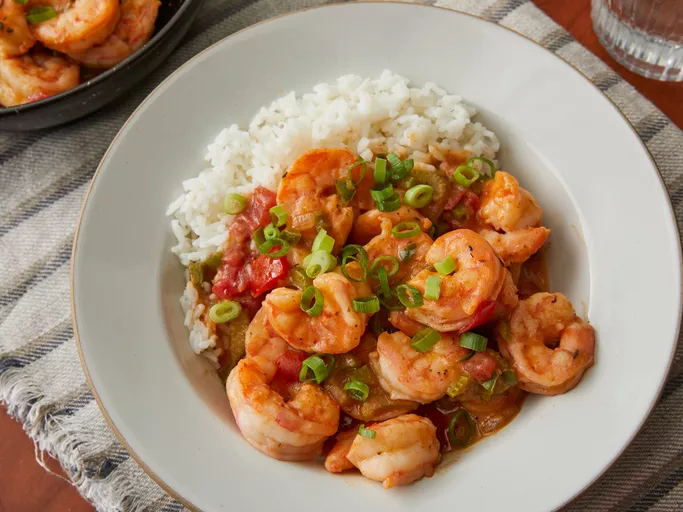
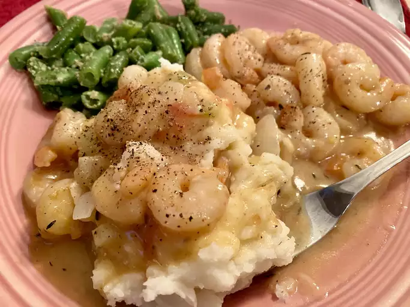

Etouffee Recipe

Shrimp Etouffee
Étouffée is a delicious shellfish stew that's a New Orleans classic. I use a homemade
spice blend in this recipe and demonstrate that it is possible to get good results using frozen shrimp,
which is
sometimes the only option.
Ingredients
- Spices and Seasonings
- Shrimp
- Vegetable oil
- Chicken stock
- Butter
- Vegetables
- Flour
- Sauces
- Rice
Steps
- Make the spice blend.
- Season and cook the shrimp. Strain the shrimp juices into the stock.
- Saute the onion,bell pepper, and celery in butter. Season and sprinkle with flour.
- Add the tomatoes and the stock. Cook until Thickened and season with sauces.
- Stir the shrimp into the sauce and continue cooking until they're translucent.
- Garnish and serve the étouffée over rice.
